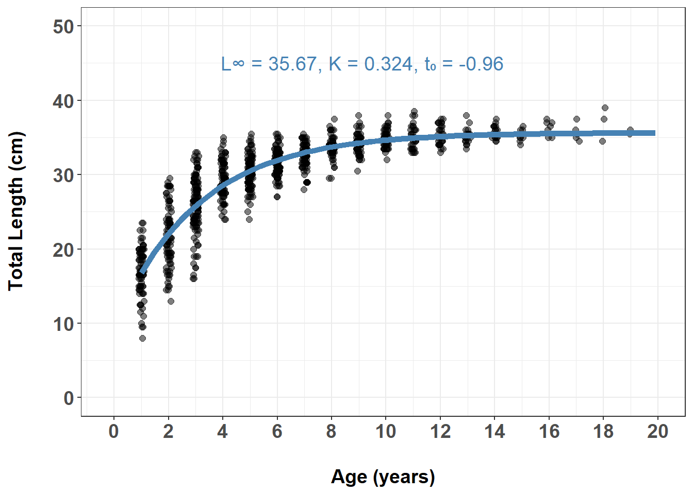

## Loading targets to run pipeline.
library(targets)Von Bertalanffy Growth Model Analysis
Introduction
Analysis of herring growth using the Von Bertalanffy Growth Model (VBGM).
Methods
Data were fitted using the Von Bertalanffy Growth Model equation: \[L_t = L_∞(1 - e^{-K(t-t_0)})\]
Results
tar_load(vbgm_model)
summary(vbgm_model)
Formula: length ~ Linf * (1 - exp(-K * (age - t0)))
Parameters:
Estimate Std. Error t value Pr(>|t|)
Linf 35.6696141 0.0109734 3250.6 <2e-16 ***
K 0.3244684 0.0006011 539.8 <2e-16 ***
t0 -0.9589410 0.0044388 -216.0 <2e-16 ***
---
Signif. codes: 0 '***' 0.001 '**' 0.01 '*' 0.05 '.' 0.1 ' ' 1
Residual standard error: 2.492 on 390669 degrees of freedom
Number of iterations to convergence: 4
Achieved convergence tolerance: 1.038e-06tar_load(vbgm_results)
vbgm_results| Parameter | Estimate | Std. Error | t-value | p.value | 95% CI (Lower) | 95% CI (Upper) |
|---|---|---|---|---|---|---|
| Linf | 35.67 | 0.01 | 3,250.56 | 0 | 35.65 | 35.69 |
| K | 0.32 | 0.00 | 539.79 | 0 | 0.32 | 0.33 |
| t0 | −0.96 | 0.00 | −216.04 | 0 | −0.97 | −0.95 |
tar_load(vbgm_plotted)
vbgm_plotted